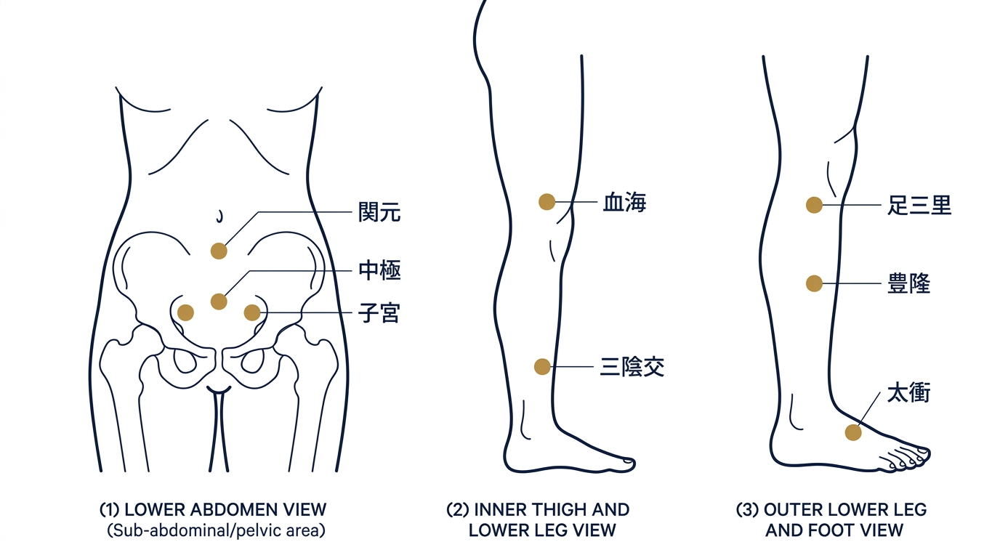

閉経前後のホルモン分泌が急変動すると、脳の視床下部が体温調節や血管運動・心拍・感情のコントロールを乱しやすくなり、のぼせ・冷え・めまい・肩こり・倦怠感が複合的に現れます。
銀座そうぜん鍼灸院では、三陰交・太衝・神門・背部の自律神経調整穴を用い、下半身の冷えと上半身のほてり（冷えのぼせ）を整えながら、婦人科治療（HRT・漢方等）との併用にも柔軟に対応します。

| ツボ名（経穴） | 位置の目安 | 主な狙い・役割 | セルフケアの注意点 |
|---|---|---|---|
| 三陰交（さんいんこう） | 内くるぶし頂点から指4本分上、すね骨の際 | 婦人科の要穴。月経痛・冷え・更年期・PMSケア | 妊娠中（初期〜中期）の強刺激・灸は禁忌 |
| 血海（けっかい） | 膝のお皿の内側上端から指3本分上 | 骨盤内血流（瘀血）改善・月経痛・のぼせケア | 親指でゆっくり5秒圧迫。妊娠中は強刺激回避 |
| 気海（きかい） | おへそから指2本分（1.5寸）下 | 気力低下・下腹部の冷え・月経不順の補益 | 温灸・保温が安全。妊娠中の下腹部直接刺激は禁忌 |
| 太衝（たいしょう） | 足の甲、親指と人差し指の骨が交わる手前 | PMSのイライラ・のぼせ・ストレス緩和 | 妊娠中は刺激を避ける（降気作用が強いため） |
| 合谷（ごうこく） | 手の甲、親指と人差し指の骨が交わる手前 | 鎮痛・自律神経調整・ホットフラッシュ頭痛ケア | 妊娠中は古典的禁忌穴のため強刺激回避 |
| 内関（ないかん） | 手首内側横ジワから肘側へ指3本分、2腱の間 | 更年期の動悸・不安・PMSの気分の波・つわりケア | 比較的安全性が高いが強圧は避け穏やかに |
国際的な医学データベース（PubMed・Cochrane等）で報告されている女性特有の体調ケア（月経困難症・更年期症状・PMS・不妊補完）領域の代表的な査読済み鍼灸研究です（標準治療との併用や研究上の限界を含めて掲載しています）。
| 年・研究デザイン | 対象・規模 | 主な結果と臨床的意義 | 限界・出典 |
|---|---|---|---|
| 2016年 Cochraneレビュー | 原発性月経困難症 42 RCTs（n=4,640） | NSAIDs比較で疼痛緩和率（OR 4.99）・有害事象減少（OR 0.10）を示唆。シャム比較は一貫せず。 | エビデンス確実性は低〜非常に低。鎮痛薬の補完として位置づけ。 Cochrane (PMID: 27087494) |
| 2013年 Cochraneレビュー | 更年期ホットフラッシュ 16 RCTs（n=1,155） | 無治療比で頻度（SMD -0.50）・重症度（SMD -0.54）を中等度改善、シャム比でも重症度小幅改善。 | ホルモン補充療法（HT）より効果小。HT不適応時の補完選択肢。 Cochrane (PMID: 23897589) |
| 2018年 Cochraneレビュー | PMS・PMDD 5 RCTs（n=277） | シャム比較で気分・身体症状・QOL改善を示唆、有害事象の群間差なし。 | 小規模・試験数少（GRADE低〜非常に低）。 Cochrane (PMID: 30105749) |
| 2018年 大規模多施設RCT | 体外受精（IVF）848名（豪州・NZ 16施設） | 胚移植前後の短期3回鍼 vs シャムで生児出生率18.3% vs 17.8%（RR 1.02）と有意差なし。 | 出生率向上の直接根拠は未確立。ストレス・冷えの補完ケアとして説明。 JAMA (PMID: 29800212) |
⚠ 専門医の受診・検査を最優先してください
閉経後の不正出血や繰り返す不正出血、妊娠可能性がある状況での激しい下腹部痛・出血・めまい（異所性妊娠疑い）、突然の耐えがたい下腹部激痛・嘔吐（卵巣茎捻転等）、年々悪化する月経痛や重度貧血サイン、発熱を伴う悪臭帯下がある場合は直ちに産婦人科を受診してください。